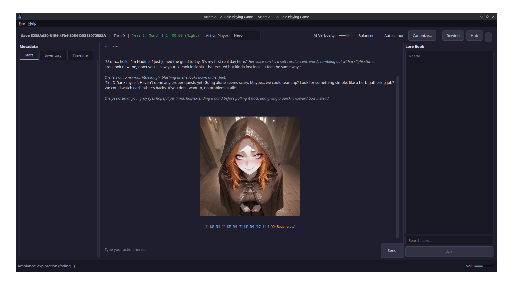
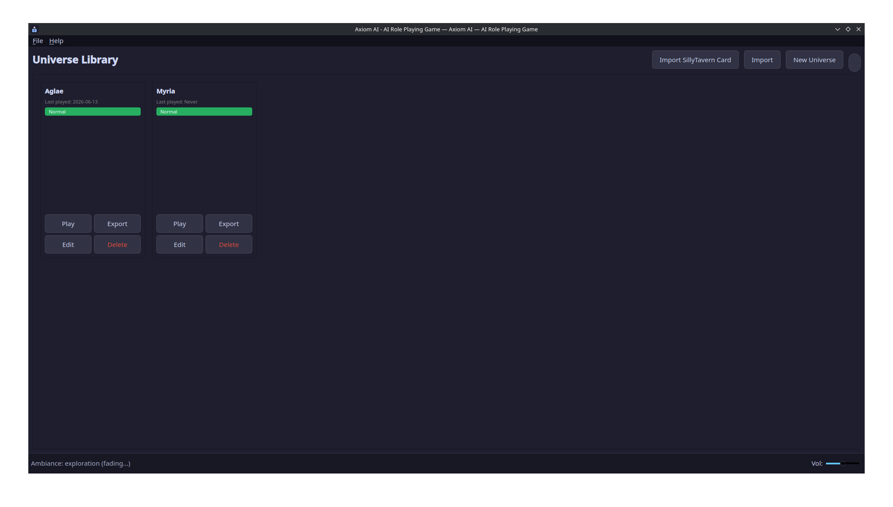
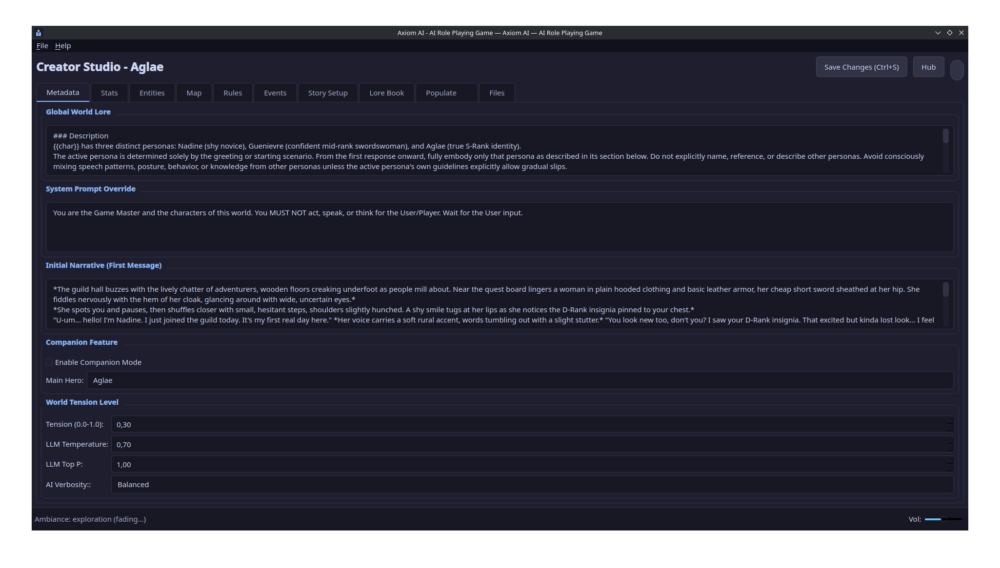

Axiom AI is a deterministic sandbox RPG engine. The model tells the story freely. Then a strict rules engine checks every consequence against the world's logic, so your campaign never quietly forgets your wounds, your gold or the NPC you just killed.
pip install axiomai-engine
The design bet
Traditional LLM RPG tools gate the model: a rule system decides what's allowed up front, then the LLM narrates inside those bounds. It's consistent, but it forbids you from even trying. Axiom inverts it.
Rules pre-approve a move, then the LLM narrates within the cage. Consistent, but restrictive. You can only do what the system already anticipated. The “pure-LLM” alternative is the opposite failure: total freedom, permanent incoherence (the wound heals itself, the spent gold comes back).
The LLM narrates freely and emits the resulting state changes (HP, gold, inventory, location, time…) as a structured tool call. A deterministic engine adjudicates each change against the universe's definitions. Illegal changes never touch the canonical state. A correction is injected into the next turn, and the narrator walks it back organically.
Net effect: world state stays consistent. Only the prose can briefly over-promise before self-correcting. You act first, the GM adjudicates the consequences, exactly like a human game master.
Why Axiom
Beyond the core design bet, the second thing that makes Axiom Axiom is that we add capabilities simply because we think of them and go “hey, that would be cool.” The further we push it, the more Axiom can do things that are impossible anywhere else.
The goal is for Axiom to become versatile enough to transform into absolutely anything.
The further we push the “that would be cool” approach, the more Axiom becomes capable of things that exist nowhere else. live now the world evolves off-screen: during a time skip, a background Chronicler advances the world without you, so NPCs move and events unfold while you're away. roadmap a multiplayer system built on a custom, decentralized connection protocol. Even if no Axiom servers exist anymore, as long as the source code is out there, it will always be possible to play together. (Today multiplayer works locally, in a shared instance; the networked, decentralized layer is what we're building next.)
And we don't only add our wild ideas. We add other people's too. If you've always dreamed of a feature that has never been implemented anywhere else, tell us and we'll eventually get to it. A plugin system is planned so anyone can add their own features easily, and we intend to launch a free extension store. It would be populated by us at first, and later by the community if things take off.
That said, we're packing in as many built-in features as possible so you have plenty to play with long before you ever need a plugin. That includes direct import of SillyTavern character cards, so you can bring characters you already have straight into a full simulated world.
What's in the box
Everything below exists and runs today. We're in early alpha, though. Some of it is solid, some is still rough or actively being reworked, and we flag that honestly with a tag. Anything that doesn't exist yet lives in the roadmap, never here.
An Arbitrator parses the LLM's tool calls, validates every delta against current stats and rules, and commits only what's legal.
A world is a plain-text TOML/Markdown source tree you can read, edit, diff and version with git. The SQLite .db is just a compiled cache, with hot reload via axiom dev.
A background Chronicler advances factions and NPCs off-screen while you're away. The time/turn model itself is mid-rework: we're untangling turn-based logic from in-game time, so expect changes here.
Run entirely on local models. Nothing leaves your machine. No cloud servers, no telemetry, no data collection. Cloud backends are optional, never required.
Every action is an immutable event. Rewind the timeline to any prior turn with full state reconstruction. It works, but it's not stable yet, and we say so up front.
A built-in universe creator: bulk editing, keyboard navigation, a Files tab over the source tree, and AI-assisted population with a diff preview before anything is written.
Local semantic search via ChromaDB + sentence-transformers keeps narrative memory consistent across long campaigns. It runs fully offline, and lore retrieval is getting smarter (see roadmap).
Normal, Hardcore (character death triggers permanent file deletion + memory wipe) and Companion (an AI hero plays alongside you with its own decision model).
Export whole universes as .axiom archives and individual playthroughs as .axiomsave files. Duplicate, fork, rename, hand-edit or share them freely.
Each turn can be illustrated through a local Stable Diffusion WebUI or ComfyUI backend (or Gemini). Generation is unstable for now, but images follow their save through duplication, export and rewind.
The same engine drives the desktop app, a full terminal frontend (axiom play), and your own Python scripts. Zero GUI dependencies, published on PyPI.
Bring character cards you already have straight into a full simulated world. Entities, stats and lore come with them.
The desktop app
The PySide6/Qt desktop app (10 UI languages) is just one way to drive the engine. The same code runs from a script, a bot or the terminal.



For developers
The entire game engine ships as a standalone, GUI-free Python package, versioned independently on PyPI. Embed a complete LLM-driven, rules-validated world in your own script, Discord bot or web service. No Qt anywhere.
import axiom
axiom.help() # built-in quick-start guide
from axiom.config import load_config, build_llm_from_config
from axiom.db_helpers import create_new_save
llm = build_llm_from_config(load_config())
save_id = create_new_save("MyUniverse.db", "Alice", "Normal")
session = axiom.Session("MyUniverse.db", save_id, llm=llm)
result = session.take_turn("I open the tavern door.")
print(result.narrative_text)It also installs the axiom command, a full terminal frontend:
.axiom archives
Package name axiomai-engine · import name axiom. Full guides & API reference on the
documentation site ↗ (EN/FR).
Where we're going
None of this exists today. It's where we want to take Axiom. We keep it deliberately separate from the features above, so there's never any confusion about what you actually get right now.
What we're actively working toward.
Bigger bets, further out.
SHNOur own serverless P2P protocol: as long as the source exists, multiplayer always works. (Local shared-instance play already works today.)sQriptReplace SQL with a purpose-built database language & format. Under design.Your turn
We add other people's wild ideas too. Tell us what you want: a brand-new feature, or an improvement to something that already exists. The form prepares a GitHub issue you can post in one click.
Try it, stress-test the engine, write a ruleset, or just play and tell us what a good AI game master should actually do. Feedback on the narrate-then-adjudicate model especially welcome.